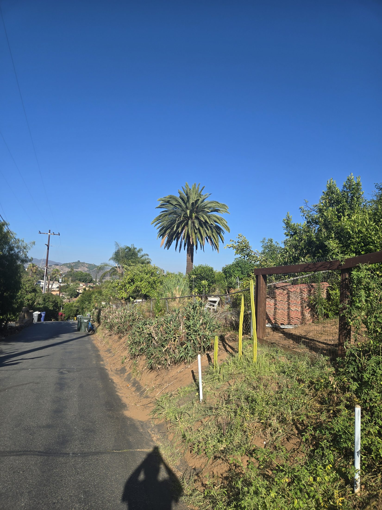
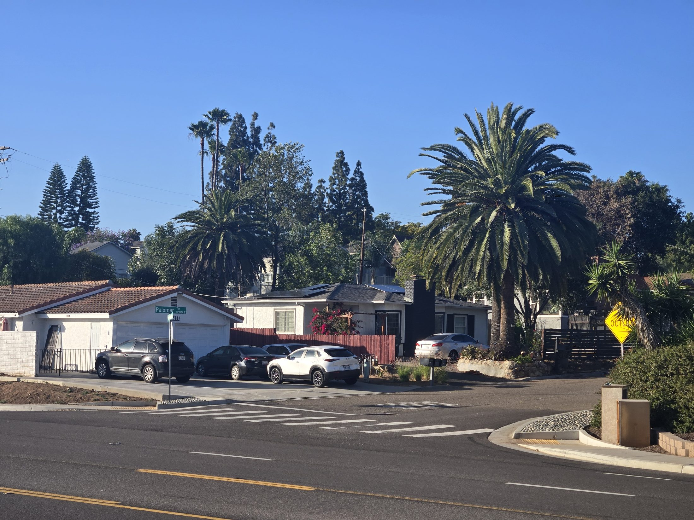
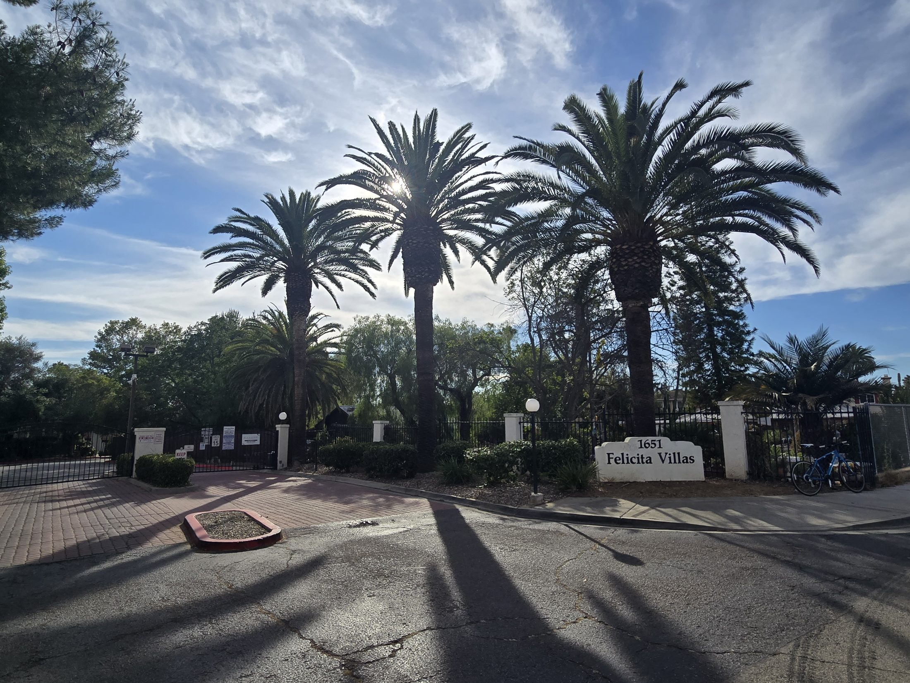
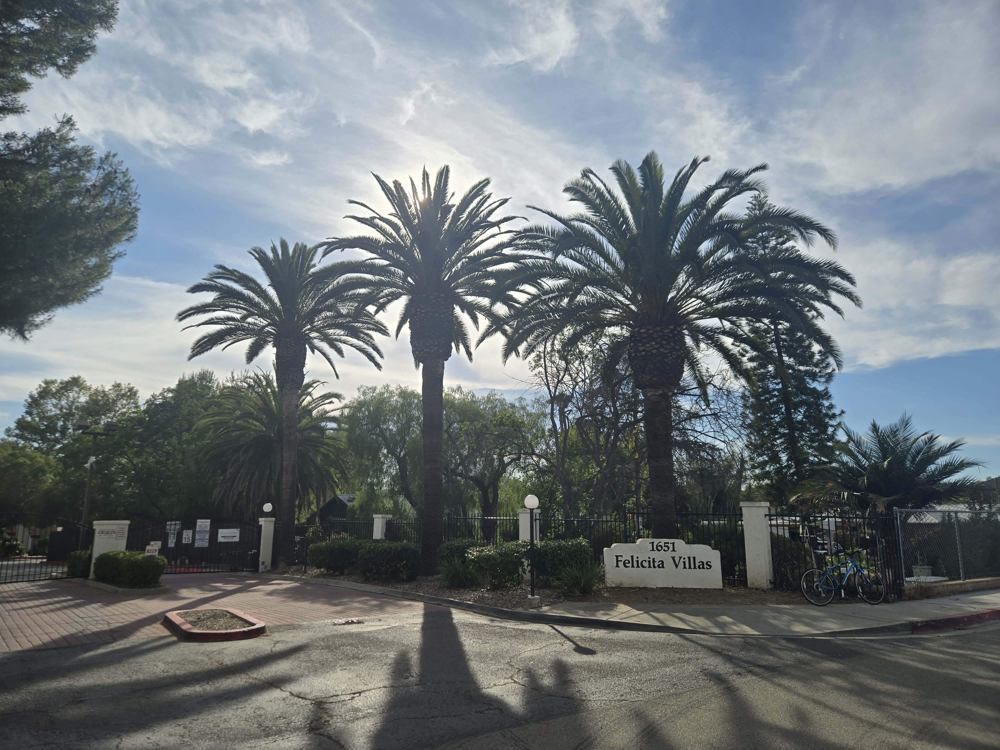
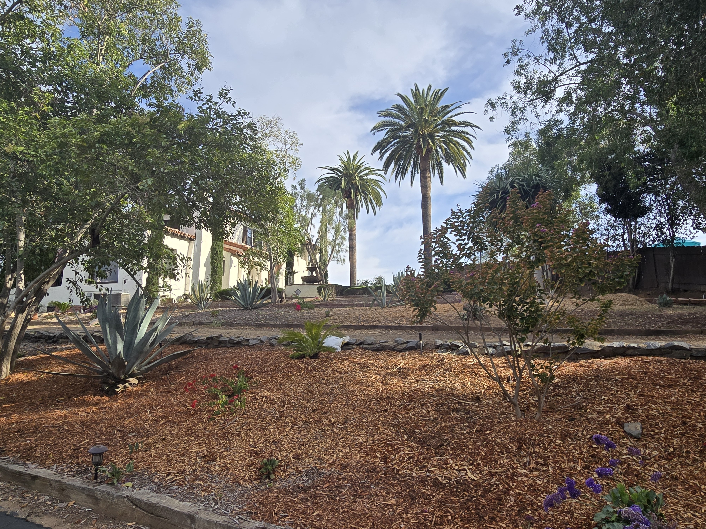
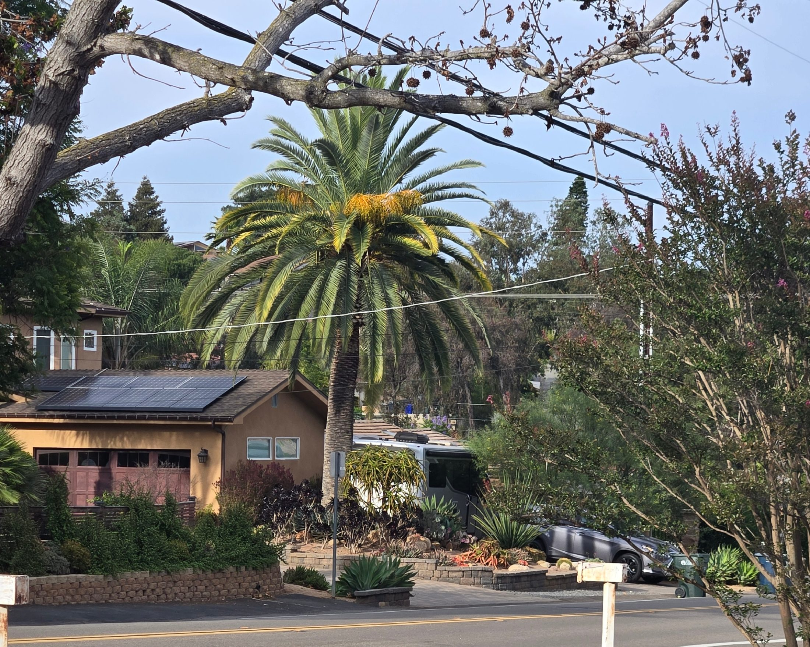
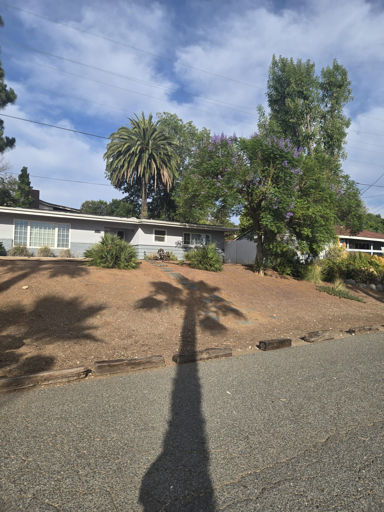
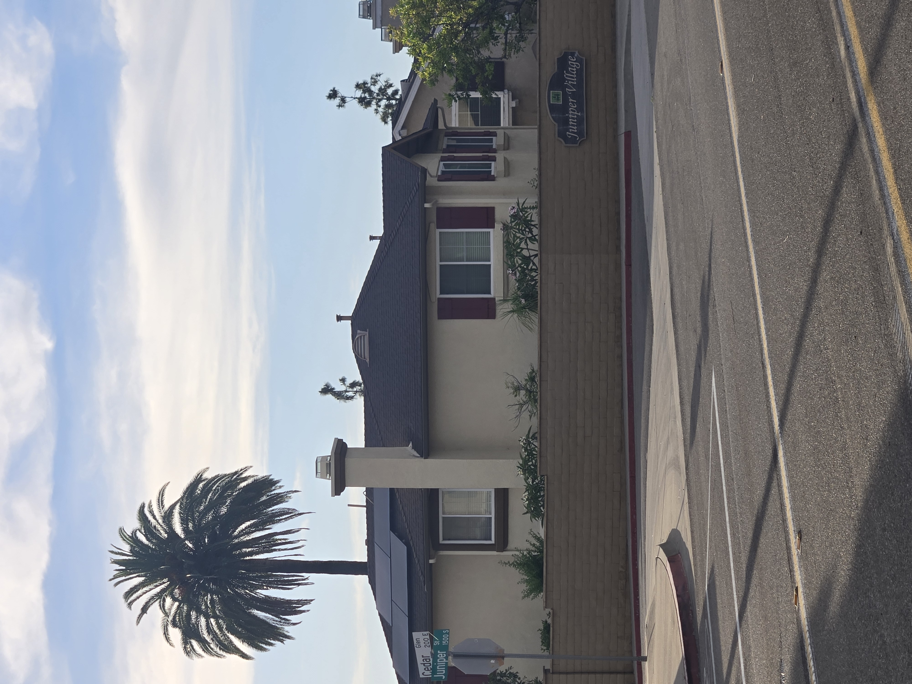

Living in Old Escondido, one of the things I notice every day is how many mature Canary Island Date Palms are tucked throughout the neighborhood. They rise above historic homes, apartment courtyards, churches, side streets, and older properties that have been shaped by decades of growth.
The more time I spend walking these streets, the more convinced I become that Old Escondido may quietly have one of the finest collections of mature Canary Island Date Palms in North County, maybe even Southern California.
That may sound like an exaggeration until you start paying attention. Street after street reveals mature specimens with massive trunks, full crowns, and the kind of presence that only comes with age.

Mature Canary Island Date Palms help define the skyline and character of Old Escondido.

Many of these palms stand near historic homes, older streets, and long-established neighborhood landscapes.
More Than Ordinary Landscaping
These palms are more than ordinary landscaping. Many took decades to reach their current size. They create shade, scale, age, and a sense of permanence that newer landscapes simply cannot replicate.
You see them at intersections, behind rooftops, above apartment buildings, and standing alone in older residential lots. Some are formal landscape features. Others feel almost hidden, visible only from certain streets, certain angles, or during a late afternoon walk.

Felicita Villas is one example of how powerful mature CIDPs can be in a property landscape.

These are not small ornamental plants. They are landmark trees that shape first impressions.

On residential properties, mature Canary palms can become one of the most valuable visual assets in the yard.
A Beautiful Landscape and a Concerning Reality
That is why protecting these palms matters. Old Escondido has an incredible concentration of mature specimens, but there is also a concerning reality developing. Around the neighborhood, I have seen areas where once-beautiful palms have declined, disappeared, or been removed entirely.
Not every struggling palm has the same cause, but South American Palm Weevil has changed the conversation for mature Canary Island Date Palms in Southern California. Waiting until a palm is clearly collapsing may mean waiting too long.
For homeowners, apartments, churches, HOAs, and older properties, these palms should be treated as long-term landscape assets. They deserve monitoring, nutrition, water support when needed, and proactive attention before decline becomes advanced.

The strength of Old Escondido's palm landscape is how many mature specimens appear across everyday streets.

Older CIDPs are decades in the making and cannot realistically be replaced within a generation.

These palms are part of the neighborhood's identity, visible above homes, courtyards, and community buildings.
Why This Is Personal
One of the reasons I started San Diego Palm Protection is because I live among these palms. I see them every day. I see the healthy ones, the historic ones, the neglected ones, and the ones that are already gone.
Old Escondido's Canary Island Date Palms are part of what makes this place feel established, historic, and uniquely Southern California. The goal should be simple: recognize what we have before more of it is lost.
Old Escondido may not officially be the Canary Island Date Palm capital of Southern California, but after walking these streets, it is hard not to make the case.
Mature palms are decades-old landscape assets. Local observation, early monitoring, and consistent care can help preserve the character of Old Escondido before advanced decline appears.
If you have a mature Canary Island Date Palm in Escondido or elsewhere in North County and have noticed changes in the crown, color, spear growth, or overall canopy structure, feel free to send photos for an educational photo review.
Related resources: Palm Care in Escondido, Canary Island Date Palm Care, and Recurring Palm Monitoring.